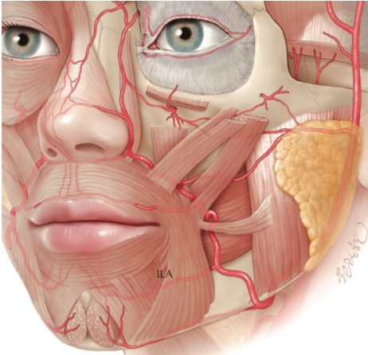
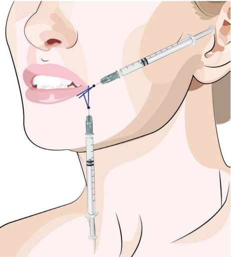
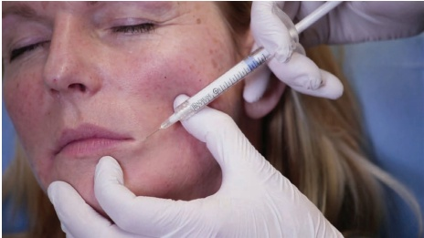
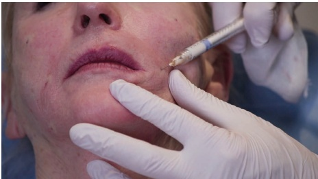
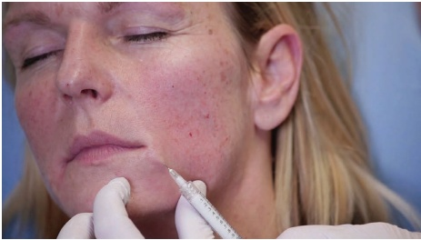
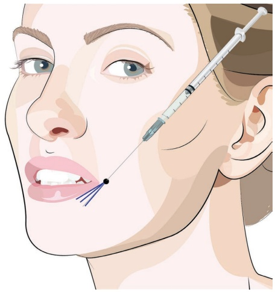
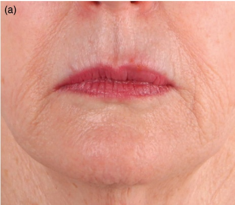
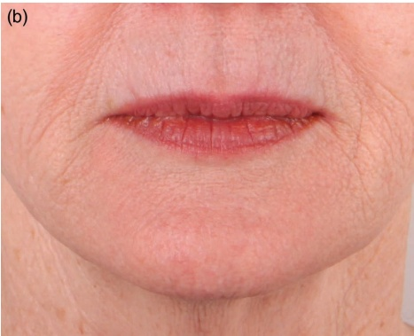

21 面部下三分之一：口角
口角区域（面部下三分之一）
21.1 引言
口角可以使眼周区域的表情显得更负面。在人偶线（marionette lines）的顶部，向下垂的嘴角暗示着苦涩或不悦。使用羟基磷灰石钙（CaHA）提升口角可以显著地带来积极的变化。
21.2 安全注意事项
注射口角时，应注意不要注射过深，因为下唇动脉通常走行于或位于口轮匝肌以下（图 21.1）。
21.3 口角锐针技术
有关注射定位，参见图 21.2。
21.3.1 分步技术
- 检查口角的部位并消毒。

-
使用未稀释的 CaHA 和 27G 针。
-
将皮肤拉向针的方向。
-
从口角推进针，直至到达下唇边缘下方。
-
确保针没有放置过浅（不能透过皮肤看到针的灰色部分）。
-
小心地放置回行线性丝或扇形丝（图 21.3）。
-
从人偶线沿口角下方进入皮肤，并将针推进至口角处。
-
在注射产品的同时，用针轻微向上推提口角（图 21.4）。
-
如有需要，放置多根丝。
-
根据需要进行手动按摩以均匀分布。
21.4 口角钝性套管针技术 有关注射定位，参见图 21.5







21.4.1 分步技术流程
-
检查口角位置；消毒。
-
使用未稀释的羟基磷灰石钙（CaHA）和 25G、38 mm 的钝性套管针。
-
在局部麻醉后，用 23G 锐针预刺孔。
-
将皮肤向钝性套管针的方向拉伸。
-
从口角沿皮下平面推进钝性套管针至下唇晕边下方。
-
小心地以扇形技术放置多条逆行线性丝（图 21.6）。
-
不要注射到嘴角外侧（不要注射到上颊脂肪区）。
-
如有需要，可放置多条丝。
-
根据需要进行手动按摩以使产品均匀分布。
有关术前和术后效果以及应用技术的直观了解，请参阅图 21.7。
21.5 术后护理
如有必要，可使用一根手指分别在口内和口外对该区域进行手动按摩，以使产品均匀分布。可能会出现不均匀的肿胀，但应在一两天内消退；尤其在使用锐针时，可能会观察到瘀伤。
21.6 为达到最佳效果的附加治疗
在处理口角之前，应考虑进行提升手术（参见颊部丰容章节）以及治疗预颏沟和嘴角纹（参见单独的相应章节）。肉毒素治疗提下面部肌肉也可改善口角。